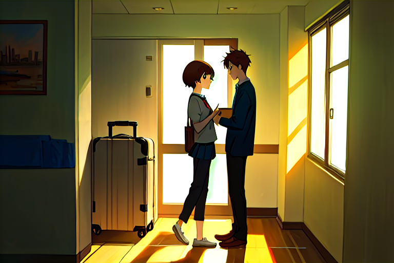
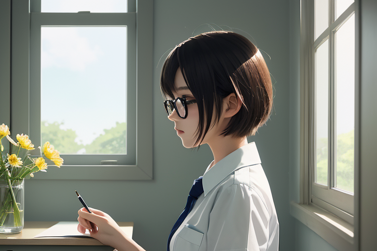
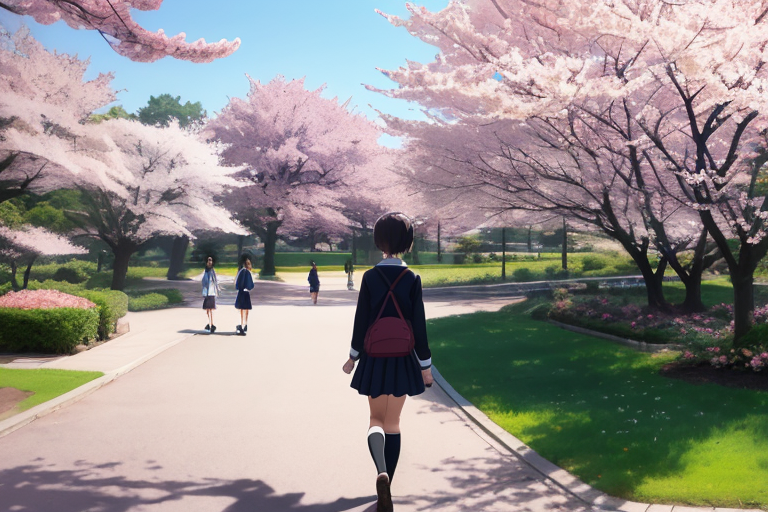

新しい生活

春の訪れとともに、都会の街並みがやわらかな光に包まれた。桜井結衣の引っ越し当日だった。朝から雲一つない青い空は遠慮なく日差しを放ち、アパートメントビルの一室では既に新しい生活が始まる準備が進められていた。
引っ越し先の部屋にはまだ家具もほとんど入っておらず、裸電球だけ吊られた天井からは冷たい光線が零れ落ちる。窓から見える街路は朝の通勤ラッシュで人波であふれていたが、それとは対照的に室内は静寂に包まれていた。
結衣は手際よく荷物を片付けながら、心の中に広がる未知への期待と不安との戦いを感じた。彼女の目の前には新しい世界が開かれているはずなのに、その先にあるものはまだ見えていない。
「ただいま」
玄関ドアの向こうから、やさしい声が響いた。
振り返ると藤原翔太郎が笑顔で立っていた。二人は同じ高校に通いながらもクラス違いだったため、それほど親密ではなかった。しかし、結衣にとっては彼の存在自体が懐かしさと不思議な安心感を覚える理由になっていた。
「こんにちは」
翔太郎が荷物を持ち上げる姿を見つめながら、結衣は言った。
窓からの陽光が二人の影を作り出し、それがあたかも二人の存在そのもののように揺らいでいた。春日らしさを感じさせる暖かな風と共に、都会特有の独特な匂いが部屋の中に入って来た。
「この辺り、まだ新しい街並みが多いからね」
翔太郎はそう言って窓枠に頬を置く。
結衣も同じように外を見つめた。彼女にとって初めて見る景色は確かに新鮮だった。しかし同時に、そこに自分がこれからどんな足跡を残していくのか想像することは容易ではなかった。
「引っ越しの手伝い来てくれてありがとう」
翔太郎の方へ向き直り、結衣は言った。
「大したことはないよ」
翔太郎が肩をすくめる様子や口角の上がり具合を見つめながら、結衣は自分の気持ちを探ろうとした。彼との会話の中には普段出会わない言葉遣いや冗談があった。
「この部屋、どんな感じ？新しい生活への準備はどう？」
翔太郎がそう聞いてくると、その質問一つひとつから自然な心配の気持しから漂ってくる。
結衣は頷きながらも何も返さなかった。彼女の頭の中では多くの思考が渦巻いていた。「進学」や「一人暮らし」という言葉だけで想像できる未来とは異なり、実際に目の前の出来事に向き合うことで初めてその現実味を強く感じる。
「春の匂い、大好きだな」
翔太郎は窓から離れて、部屋の中を見渡す。彼が立つ場所からはまだ何もなかった。
しかし結衣にとってそれはむしろ安心感を与えた。「新しい」にはそれだけ未来があるのだと思った。
「あそこにベッド置こうかな…」
思案顔で壁際を指差しながら、翔太郎は言った。
結衣もその視線に従い、部屋の一角を見つめた。そこにあるのはただ裸電球と影だけだったが、それでも翔太郎の言葉と共にそれが「未来」となる何かを感じることができた。
「そうね」
二人で新たな生活を模索する様子は、春日の中で静かに芽生えつつある新しい希望そのもののように思えた。まだ何も準備されていないこの部屋もまた、彼女たちにとってこれから始まる未知の旅路へと導く入口だった。
その光景から視線を外すことができず、結衣はふっと微笑んだ。
「春が来たって感じだな」
翔太郎の声と共に窓からの暖かな風がさらに入った。
高校時代の思い出
桜の木が微かに揺れる春の午後、町並みには晴れやかな雰囲気が漂っていた。街路樹から漏れる柔らかい陽光がアスファルトを緑色に染め上げる。遠くで少年少女たちの笑い声とチャイム音が聞こえる。
結衣は、高校時代からの友人たちとの予定があるカフェへ向かっていた。新しい生活が始まったばかりだが、懐かしい顔触れを見ると心地よい緊張感に包まれる。
カーテン越しの日差しが床を揺らすように照らしている店の中にはすでに彼女たちがいて、それぞれコーヒーと紅茶を持っていた。結衣は深呼吸して店内に入り、友人たちに向かって微笑む。「久しぶりね」
「やあ！どう？」翔太郎も迎えに来てくれた。
「お疲れ様です」
「何を頼もうかな」「カフェラテでいいわ」と次々と返答が舞い戻る。結衣はゆっくりと周囲を見渡し、窓の外から聞こえてくる春の声を探した。
音楽に耳を傾けるように彼女たちは懐かしい話を始めると、笑顔も自然に戻った。「あの頃ね」友人たちの口調が子供らしくなり、「毎週会って授業ノート交換したり」「野球部の人たちとよく一緒にいましたよ」と語り出す。それぞれの記憶は風船のように膨れ上がり、小さな声で「あいつはどうした？」と聞かれる度に結衣も顔を綻ばせる。
翔太郎が隣から、「ほらね」静かな微笑みと共に彼女を見つめる。「一緒に高校生活過ごしてたんだな」と彼の視線は遠くを見る。音楽と共に、窓際の桜花びらが舞い上がり、友人たちとの思い出もまた風に乗って去りゆく。
春日の光が頬を撫でる様子を見ると、「あの日ね」「一緒に走ったよね」と彼女たちは笑顔を振り絞ることから始まった。それぞれの感情は言葉よりも先に表情となり、それら全てを含んだまま彼らは静かに行き交う。
結衣は何も言わずにただ微笑んでいたが、「どうした？」と友人達からの問いかけが返ってくる。「何でもない」彼女は目元を手で覆いながら答える。その一方翔太郎の存在感は、春日の陽光と共に温かい胸騒ぎとなって結衣に広がる。
遠くから聞こえてきたチャイム音と笑顔たちとの別れ際、「またね」「お疲れ様でした」友人たちとは短い挨拶で会話を閉じた。その瞬間、彼女は自分が一人の大人になったことを思い知らされた。「春」と「過去」とが繋がるこの時間帯に彼女の心は揺れていた。
カフェからの道を歩き出すと、「あそこね」翔太郎が指さす先には以前通った図書館がある。その空気感から、昔の自分たちを見つめ返していた。「そうよ」と結衣も頷く。「ここから始まったんだよね」
遠ざかる友人たちの声と共に、春日は街を優しく包み込み、彼女が新たな一日へと歩き出すことを許す。
第3章
朝日が水平線からゆっくりと顔を見せ、その光が街の隅々まで差し込む。桜井結衣はベランダに出て深呼吸する。春の空気にはまだ少し寒さが残るが、花咲く木々からは甘い香りが漂ってくる。彼女は何度も口を開け閉めして、その新鮮な息を何度も吸い込む。
手の中にあるスマホは震えるほどに熱を持っていた。昨日のカフェでの再会以来、友人たちとのやり取りが増えたからだ。
「結衣さん、今週末はどうしてる？」
そんなメッセージが届くと、彼女は何度も画面を見つめながら返信を考えてから送る。
学校に戻ると廊下には笑顔の人々の声があふれている。しかし、それが心地よく感じるのは今日だけかもしれない。
教室に入り鞄を置き、窓を開ける。そこからは小さな丘が見えている。まだ緑は薄く冬枯れの草木しかないが、春に咲く花たちが既に根付いているのがわかる。
授業が始まり、先生から新たなプロジェクトについて説明される。
「今年度の文化祭では各クラスで自主的に企画を立てて実行していただきたい。」
結衣はその言葉を受け止め、心の中で何かが動き始める。
放課後、彼女は図書館へと向かう。高校時代と同じようにここでも過ごす時間が増えた。
「桜井さん、どうしたの？いつもより顔色が良さそう」
クラスメートからの声に頷いてから、本棚の間に身を隠して深呼吸する。
彼女の手には昨日書いた日記があった。高校時代のことを綴ったそのページは既読で、新しいページを開く。
「今日は何をしよう？」
翔太郎との約束もありながらも、今度こそ自分が動こうと決意した一日が始まる。
丘に咲き始めた小さな花たちが風に乗って揺れる。それぞれの色とりどりの蕾は一斉には開かない。それは自分自身のことのように思えた。
彼女は何度もページを繰る。未来への想い出作りの始まりになるかもしれないこの日記に、新たな決意を書き込む。
「新しい一日が始まるよ」
結衣は図書館から出て教室に戻り、黒板には明日からのプロジェクト計画を描き出す。
窓ガラスが朝陽に反射する。そこにはまだ小さな影だけれども、その中に未来への一歩があると感じた。
彼女は何度も深呼吸をして新しいページを開く。
「今日から始める」
結衣は初めて自らの手で未来を描こうとしていた。
第4章
春の日ざしは柔らかで、窓ガラス越しに教室の中に優しく流れ込んでくる。桜並木が満開となり、淡いピンク色と新緑の対比が眩しいほどだ。結衣は机に向かい、黒板上の明日からの計画を見つめながら深呼吸する。
「もう一歩踏み出すんだわ」と小さな声で呟き、彼女はノートを開いた。
紙面には既にいくつかのアイデアと目標が書き込まれている。クラスプロジェクトや日記から得たインスピレーションを元にして、自分自身に対して前向きな提案をしている。
「春になると、何かが始まる気がするよね」
隣の席で藤原翔太郎が笑顔で話しかけてきた。
「そうだね…新しい学期、新しい季節。でも、何から始めればいいのか分からなくなることもある」
結衣は窓際を見つめ、桜吹雪を眺める。
「きっと答えは自分で見つけられるよ」と翔太郎が続ける。「君なら絶対にできる」
彼の言葉は暖かさと信頼感に満ち溢れており、結衣には背中を押す力となった。
窓ガラスから差し込む光が、淡いピンク色に染まった桜吹雪と共に室内に入り込んでくる。
「新しい決断をするんだわ」ともう一度自分自身に言い聞かせる。この季節は何かが始まるのだと心の中で告げる。
結衣はノートをめくり、新たなページを開いた。
新学期初日、彼女が選んだのは大学への進学と同時に地元に戻って家族と共に生活することだった。「両方とも諦める」ではなく「バランスを見つける」という考え方で決断した。その瞬間、窓から差し込む春の光は一層強く、暖かさを帯びていた。
この日からの新たな日々へと向けた準備が始まる。
結衣はノートに書き込んだ計画通りに行動することを心に決め、初めて歩み出す足取りながらも前向きな気持ちで教室から出ていった。後ろ髪引かれつつも、彼女は窓の外を見やり、桜並木の中へと消えていく。
青空が広がる中、淡いピンク色の花びらと共に春の風に身を任せながら。
結衣の前には新しい季節が始まる。彼女の決断もまた、新たな旅路への一歩となりつつあった。
第5章

春の晴れた午後、窓から差し込む柔らかな光が部屋中に優しい暖かさを運んでいた。桜井結衣はベッドに腰かけ、机上の文房具と手紙を見つめている。その日の授業終わりにはクラスメイトたちとの打ち合わせがあり、新しい学期への準備の仕上げとなる重要な会話が待ち受けている。
「翔太郎さんからもらったアドバイスを思い出そう」と彼女は自分に言い聞かせた。「両方手に入れられる可能性もある」
結衣の視界には、桜並木に春風に乗って軽やかな白い花びらが舞っている。その光景を見つめながら、彼女は再び自分の心を振り返る。
「あっちに行きたくない」と声に出さずにはいられない。「でもここも捨てたくない」
窓の向こうでは鳥たちがさえずり合い、春らしい匂いと音色に包まれている。結衣は深呼吸をして紙に向かう。「両方を諦めなくていいんだってね」と自問しながらペンを取り上げる。
手元で紙に文字を刻むたび、過去の思い出が頭をよぎり、心には複雑な感情が渦巻く。それでも彼女は自分自身と向き合い続けようとする。その日はまだ始まったばかりだ。新しい一歩への道しるべとなる手紙に思いを込めて。
「でも、どうすればいいのかわからない」
結衣の視線は机上の手紙へ戻る。「だから、今日の会議で話すんだ」と彼女は自分自身に向けて言い聞かせた。その声には不安と決意が混ざっている。「具体的なプランを考えたい」。
庭先から微かな葉桜の香りが漂ってくる。風に乗って柔らかい音色を奏でる木々とともに、春日よけの窓枠に吊られたカーテンも揺れる。結衣は立ち上がり、新たな一歩へと向かう決意を胸に手紙を持ち上げた。
「今日から始めるんだ」
その言葉と共に彼女の視線が窓外に向いた。「新しい春が始まる」と心の中で呟きながら。
遠くで子供たちの笑い声。近づいてくる新たな季節とともに、結衣は自分自身と向き合い、未来への道を切り開こうとする。
「これからどう進むべきか」
彼女は自分の決断に深呼吸しながら頷いた。「もう迷わない」と心の中でつぶやく。
その日はまだ始まったばかりだった。新たな旅路の幕開けとなる一歩が刻まれる瞬間、春の訪れと共に。
結衣は窓の外を見やりながら、手紙を机に置き直した。
「進むべき道を選んで」
それを胸に抱えつつも、彼女は遠くの方へと視線を向けた。「新しい何かが始まる」と心の中で唱えた。その言葉と共に春の風が頬を撫でる。
新たな日々への準備を終えて、結衣は一歩踏み出すための最後の一息をついた。
彼女は再び窓外を見やると、「これから何を選ぶべきか」
「それが自分にとって最善なのか」
自身に問いかけた。その視線先には遠くで子供たちが風船と笑い声と共に春祭りを開催している様子があり、それを見て結衣は小さく微笑んだ。
その日を締め括る最後の音符として風鈴の小さな鳴き声が聞こえ、「新しい何かが始まる」と彼女の中で繰り返し響いた。
新たな一日への一歩とともに窓から差し込む柔らかな光と、春の匂いと音色で満たされた部屋。その中での結衣は、未来へ向けて心を落ち着かせつつ手紙に思いを綴る。
「今日から始めるんだ」と彼女自身に向けて言い聞かせて。
その日がまだ終わっていないこと、新たな一日への決意と共に、「新しい何かが始まる」
窓の外からは風鈴と春鳥のさえずりが重なり合い響き渡っている。
第6章
春の陽射しは、ベランダで咲き始めた桜の花びらに柔らかな光を当てていた。結衣は窓辺から外を見つめ、遠くで聞こえる子供たちの声が爽やかさと共に肌をおとずれる風に混じり合っていた。
彼女は机に向かい、前日書き終えた手紙を見て溜息一つ吐いた。「今日から始めるんだ」と言いながらも、足元ではまだ迷いが蠢く。明日からの生活への不安と期待の入り交じった気分の中で、結衣は自分自身との対話を続けようとした。
「翔太郎に話すべきか？」彼女は手紙を握りしめるとその名前を考える。「でも……」すぐに頭から消えた。
窓外では春祭りが始まり、地元の子供たちが色とりどりのバルーンを持ち、笑顔で駆け回っている。それらを見つめる視線は少し遠い印象があった。
彼女は手帳を取り出し、新たなページを開いた。「ここから新しい一歩を踏み出す」と書き入れた文字も、心に決めていることとは必ずしも一致していなかった。
街の喧騒が聞こえる。人波の中では誰かと離れて一人でいるのが一番落ち着くのに、今日はそれが嫌だった。外へ出て行きたい衝動を抑えつつ、彼女は紙に向かい再び書き始めた。「手紙は何処に行けば届けられるのか」
思考の中で迷走する自分自身に息を吐き出す音が聞こえた。
「だから」と結衣は小さく呟いた。その声は静かな室内で大きく響いて、彼女にはまるで自分の心の声のように感じられた。「何処へ行くべきかわからないけれど……でも」
手帳を開き再び書き始めると、新しいページに『旅立ち』と題して、文字を連ねていく。
彼女の視線はまた外に向かい、祭りが終わりかけた頃合いを見計らって窓から身を乗り出す。桜の木々にはまだ花弁が残っていたが、春風に乗る白い雪のような景色に見惚れていると、ふと誰かの声が聞こえた。
「結衣さん」
彼女は振り返らずその名前だけ聞いていた。「翔太郎……」彼女の心臓が急激な鼓動で鳴り響く。
彼が扉を開けた音。それから一瞬、静寂があった。廊下に自分の足音と彼の足音が重なる様子を想像しながら、結衣はゆっくりと振り返った。「翔太郎」と名前を呼ぶ代わりに、「どうしたんですか？」と言葉を紡ぐ。
「手紙……見た」彼は静かな声で言った。その言葉が彼女の中で何かの決断へ繋げられ、同時にまた困惑を与えているような感情があった。「何処へ行くべきなのか迷っているみたい」
結衣はうなずいた。「それについて話すべきか」と問いかける。
「好きにすればいい」翔太郎の静かな返答が心地よい風のように彼女を包んだ。それは、その瞬間に必要な強さだった。
窓枠から覗く外の景色と室内で織り成す静けさの中で、「手紙」という単語が結衣の頭の中を通過した。「迷いは誰にも解決法を与えない」それを理解して彼女は再び自分自身に向き合い、新たな決断へ向かう道を選んだ。
その日から始まる物語。春風の中に紛れる桜吹雪のように、新しい一歩が結衣の足元で舞い散る予感があった。
第7章
第7章
春の日差しは柔らかで、街路樹が風に揺れて音色を作り出す。アスファルトにはまだ少し冷たさがある。結衣の家の裏庭では桜の花びらが舞い散っており、淡いピンクと薄緑が絡み合っている。
リコはベッドから起き上がり、窓を開け放つ。外で子どもたちがボールを蹴る音が聞こえる。それとは対照的に、どこか遠くで静かな鳥のさえずりも混ざっていた。彼女は深呼吸をして頭の中を整理する。
机に向かい、手紙を見直す。「好きにすればいい」という言葉が心の中で何度も繰返される。それは勇気を与えるものだったし同時に重い決断でもあった。
「リコちゃん！朝ご飯できたよー」
母親の声が玄関から聞こえてくる。結衣は手紙をしまうと、寝室を出て台所へ向かった。
朝食中も電話は鳴り止まない。友人からのメッセージや通知ばかりだった。「これからどうする？」という類いのものが多々ある。リコはそれらを見ずにスルーした。彼女にとって今は大切な時間で、ただ自分と向き合うことが必要な気がしていたからだ。
結衣が一人になったとき、鏡に自分の顔を映す。短く切り揃えた髪が額を覆っており、黒縁の眼鏡は瞳の光さえも和らげていた。「好きにすればいい」という言葉とともに、彼女は新たな決断に向けて一歩踏み出すことを決めた。
「ねえ、結衣ちゃん」
翔太郎からのメッセージだった。リコは迷わず返信を打つ。「今考え中」そして、自分自身に向かって微笑む。春の風が頬に触れるように、彼女の胸の中では新たな決意が芽生えていた。
結衣は再び部屋に戻り、机の上にある手紙を開く。それは以前受け取ったもので、その中には自分が選ぶべき道を示唆する言葉が書かれてあった。「好きにすればいい」この言葉が結衣にとってどれほど重い意味を持っていたのかは誰にもわからない。
彼女は窓の外を見つめる。桜並木の先端から春日らしさを感じる風音と共に、新芽と花びんが揺れている様子を眺めながら深呼吸をする。その息遣いの中で、「好きな道」を選ぶための一歩を踏み出す決意は確固としていた。
結衣は机に向かって座り直す。「好きにすればいい」という言葉と共に、彼女の新しい旅路が始まった。春の陽射しが窓ガラス越しに差し込んでくるその瞬間、すべてが新たな始まりとなる予感があったからだ。
（続く）
第8章

春の風が肌を撫でるようだった。桜花びんから舞い散る淡いピンク色の粒々が、明るい日差しに透き通って光り輝くように見える。空は晴れ渡り、遠くに聴こえる鳥のさえずりと風に乗った花の香りが心地よく響いていた。
桜井結衣は公園のベンチで深呼吸を繰り返した。手紙の中にある「好きにすればいい」という言葉があたかも鼓膜に直接語るかのように彼女の耳元で反芺しているようだった。「本当に自分にはそれができるのか？」という問いかけが心の中で渦巻き、同時に新たな決意を促していた。
公園の端から見える家並みは静まり返っていた。その向こうに広がる田園地帯からは、風に乗って農薬と土壌特有の甘い香りが漂ってくる。春らしい温かさを感じながらも、彼女の心臓には緊張感がかすかな震えとなって伝わってきた。
「でも、好きにすればいいんだよね」と結衣は自分自身に言い聞かせるようにつぶやいた。
ベンチの背もたれに頭を預け、瞼の下で暖かい日差しが静かに揺らぐ。彼女の心には前進への決意と共に一抹の不安が渦巻いていた。
公園脇を通る道路から、バスと自転車による音響が遠くまで聞こえてくる。時折通りすぎる人波は穏やかな表情を浮かべており、それら全てが新しい日々への前兆のように感じられた。
結衣の手の中には携帯電話があった。昨日から連絡を取り合っていた友人たちからの未読メッセージを見つめながらも、彼女は何度も顔を上げて公園全体を見渡していた。
「今日こそ、始めるんだよ」と再び自言自語するように口にした。
結衣はゆっくりと立ち上がり、ポケットからハンカチを取り出して頬の汗を拭った。心地よい風が彼女の髪を優しく撫でる。
公園全体を見渡し、その静けさの中に決断の重みを感じながらも、同時に希望に満ちた未来への扉を開くという緊張感と冒険心にも似た感情が胸いっぱいになった。
結衣は深呼吸をして携帯電話をポケットに戻した。彼女は再び道の方へ視線を向け、ゆっくりと歩き出す。
春の風に包まれながら進むその足取りには、新しい明日への決意と希望があふれていた。公園から見える広大な空が、彼女の新たな旅路を見守るように静かだった。
樹々の間からのぞく青い天井は、まるで無限の大舞台を示すかのように遠くまで続いている。
「好きにすればいい」という言葉と共に描き出される未来に向けて、桜井結衣はその第一歩を踏み出した。春風が背中を押してくれているように感じられた。
公園の入口へ向かいながら、彼女の心には新たな光景や人々との出会いへの期待があった。
青々とした草木に囲まれた道端から聞こえる遠くで鳴るカエルたちの声もまた、彼女にとって春を象徴する音楽のように響いていた。